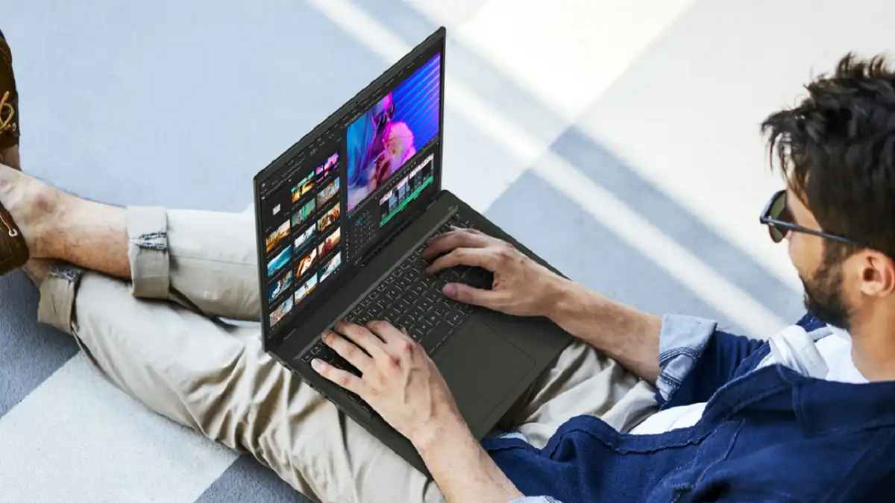

Ноутбук Acer Swift Edge 16
Обновлённый ноутбук Acer Swift Edge 16 оказался одним из наиболее интересных анонсов выставки, где других ноутбуков было немного. Эта модель предлагает экран OLED с частотой 120 Гц и разрешением 3200 х 2000, что не помешало корпусу стать легче прошлогоднего. Также здесь применяется процессор AMD Ryzen 7 7840U, усиленный искусственным интеллектом. Ноутбук стал немного толще в некоторых местах, благодаря чему получил клавиатуру с увеличенным до 1,3 мм с прежнего 1 мм ходом клавиш. Также было улучшено охлаждение, что наряду с процессором сделало ноутбук быстрее. При этом он ещё и подешевел по сравнению с прошлогодним и стоит $1299.